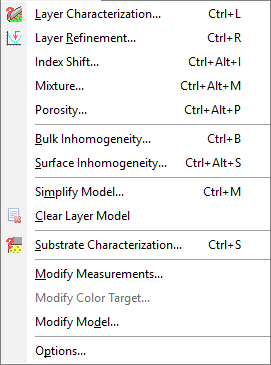

Characterization Menu
Characterization menu provides access to the characterization options of the program. These options allow finding optical parameters of thin films and substrates. To initiate a layer characterization, the user must first load one of the measurement data files and one of the substrate data files. To initiate a substrate characterization, only a measurement data file is to be loaded.

Layer Characterization… (Ctrl+L): Starts the Layer Characterization procedure.
Layer Refinement… (Ctrl+R): Starts the Layer Refinement procedure.
Index Shift… (Ctrl+Alt+I): Starts the Index Shift procedure.
Mixture… (Ctrl+Alt+M): Starts the Mixture characterization procedure.
Porosity… (Ctrl+Alt+P): Starts the Porosity characterization procedure.
Bulk Inhomogeneity… (Ctrl+B): Starts the Bulk Inhomogeneity search procedure.
Surface Inhomogeneity… (Ctrl+A): Starts the Surface Inhomogeneity search procedure.
Simplify Model… (Ctrl+M): Allows simplifying the layer model by removing selected features from the existing layer model.
Clear Layer Model: Erases the result of layer characterization in the RAM, allowing you to start the characterization procedure from the beginning.
Substrate Characterization… (Ctrl+S): Starts the substrate characterization procedure. Measured data for a bare substrate should be loaded before starting this procedure. In the case of an absorbing substrate, it is important to specify the substrate thickness in the Characterization Options dialog.
Modify Measurements and Modify Color Target: Allows modifying measurement data or the color target directly in computer memory without affecting the data stored in the database. This is convenient for introducing temporary changes that can later be made permanent by saving them to the database (see the command Save Measurements… in the Data Menu).
Modify Model: Allows modifying the layer model resident in computer memory without affecting the data stored in the database. This is convenient for introducing temporary changes that can later be made permanent by saving them to the database (see the command Save Layer Model… in the Data Menu).
Options: The Options command allows for selecting various settings of OptiChar.